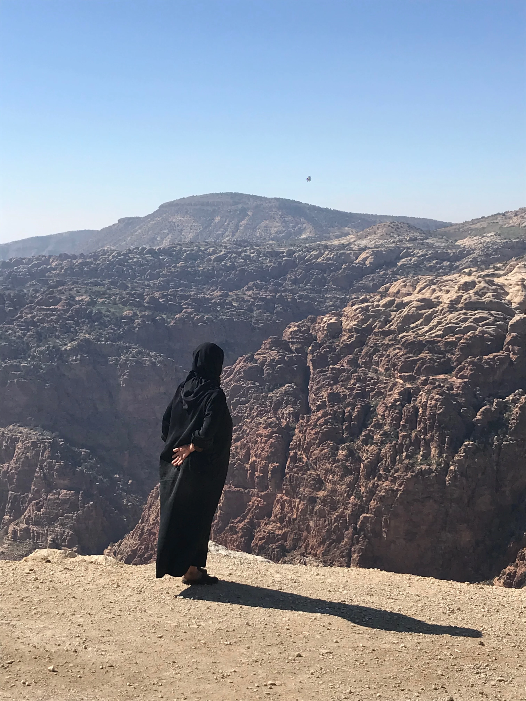

Jordan was the first time I put a foot into the middle east and its whole complex mess, despite of the fact that the country has been living a peaceful time atleast in the recent years. The roman ruins of Jericho, the Jordan river, the Dead Sea and Petra were the highlights of my trip.
The Nabataeans were ancient nomadic Arab people, an independent civilization based in nowadays Jordan between 400BC - 200BC. They were annexed into the Roman Empire in 106AD and consequently they converted to Christianity. The kingdom of Petra, capital of the Nabataeans, was built around 100BC and included a population of 20.000 people. Despite the roman annexation, Petra was a very important trading center until it suffered an earthquake in 363AD. It became popular in the west after a swiss traveler, Johann Ludwig Burckhardt, rediscovered it in 1812 and has been seen today as one of the 7 Wonders of the World.

Amman was our starting point. The city is divided in downtown and uptown, the first more chaotic and full of every kind of street shop, falafel shops and sweet stores. I have tried Kanafeh for the first time (a sort of local pastry soaked in syrup and filled with cheese) and I have to say I am not a big fan, although I was happy to try it. The uptown part of the city including Rainbow street is a bit more westernised with fancy coffee shop and bars and maybe a little less chaotic. The Citadel also deserves a visit. Inhabited since the Neolithic period (10000-4500BC) from many different civilizations (Assirian, Babylonian, Byzantines, Romans and so on), it is one of the archeological sites in Jordan that impressed me the most together with Jerash.
Jerash is one of the oldest city in the world and nowadays it is still one of the best preserved Greco-Roman city. The city visitable on a day trip from Amman gives a certain feeling of being in the capital of Italy.

The Jordan river gives the name to the country and it also has a strong religious value because it was the place where Jesus Christ was baptised. Driving about 40km south-east there is another biblical reference that can be visited, the mount Nebo, the place from where Moses saw the promise land but was not allowed to enter. From the top of the mount, it is also possible to enjoy a beautiful view on the valley.
I AIN'T NOTHING What I am is what I say all the white lies and the words taken by the wind And I am nothing just an empty circle of breath a tamed animal who lost the instinct the fogginess of the promised land The bendages that I follow the waters where I swim are the only things that makes the world a place to be
Wadi Rum was one of the deserts that shocked me the most together with the Sahara desert in North Africa and the Pinnacle desert in Western Australia. It is unique in a certain way because of being shaped into granite rocks. On some of those rocks, it is also possible to see some inscriptions left probably from Nabateans in order not to get lost and to help other travelers along the journey through it. A must seen before embarking in this adventure is the movie Lawrence of Arabia taken from The Seven Pilars of Wisdom from D.H.Lawrence. We left Wadi Rum in the same we went in: on the back of a truck. The most beautiful experience I had in Jordan was also the end title of my adventure: a snowstorm. Despite of not having spent much of my life in a desert, I think it is still fair to assume that snow in the desert is not something that happens everyday and we have had sun during most of our stay. The very same morning when we left, heading towards Aqaba and towards a very tough period for humanity (the beginning of the pandemic), we went through a snowstorm while being taken back to the city, in the beginning of a sort of divine and beautiful nemesis who would mark the beginning of an era.